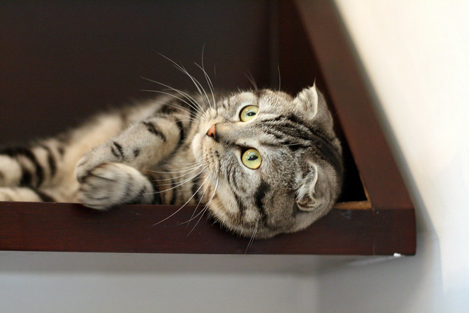
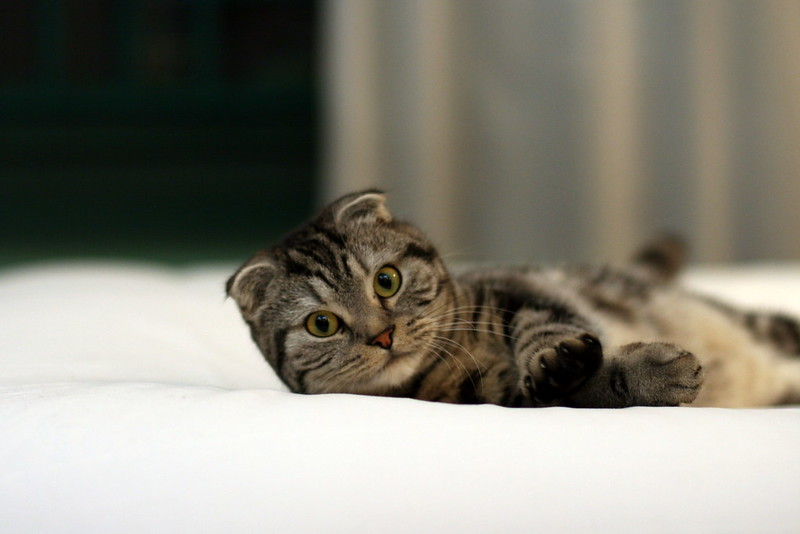
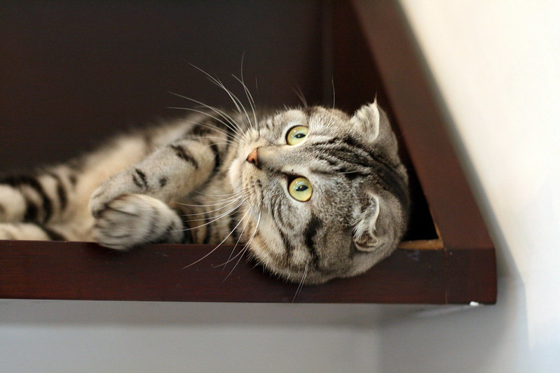
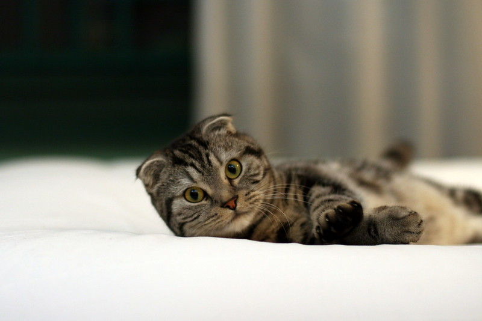

The original Scottish Fold was a white barn cat named Susie, who was found at a farm near Coupar Angus in Perthshire, Scotland, in 1961. Susie's ears had an unusual fold in their middle, making her resemble an owl. When Susie had kittens, two of them were born with folded ears, and one was acquired by William Ross, a neighbouring farmer and cat-fancier.[2] Ross registered the breed with the Governing Council of the Cat Fancy (GCCF) in the United Kingdom in 1966 and started to breed Scottish Fold kittens with the help of geneticist Pat Turner.[3] The breeding program produced 76 kittens in the first three years – 42 with folded ears and 34 with straight ears. The conclusion from this was that the ear mutation is due to a simple dominant gene. Susie's only reproducing offspring was a female Fold named Snooks who was also white; a second kitten was neutered shortly after birth. Three months after Snooks' birth, Susie was killed by a car. All Scottish Fold cats share a common ancestry to Susie.
The breed was not accepted for showing in Europe and the GCCF withdrew registrations in 1971 due to crippling deformity of the limbs and tail in some cats and concerns about genetic difficulties and ear problems such as infection, mites, and deafness, but the Folds were exported to America and the breed continued to be established using crosses with British Shorthairs and American Shorthairs. Since the initial concerns were brought, the Fold breed has not had the mite and infection problems, though wax buildup in the ears may be greater than in other cats.[1] The concerns about deformities may have been caused by osteochondrodysplasia, which causes abnormalities in bone and cartilage throughout the body.
The rare distinctive physical traits of the breed, combined with their reputation as unusually loving companions, make Folds highly sought-after pets and Fold kittens typically cost considerably more than kittens of more common breeds.[5] Scottish folds are also popular among celebrities, one of them being American singer Taylor Swift, who has named her three Scottish fold cats after well-known fictional characters – "Meredith Grey", "Olivia Benson", and Benjamin Button.
 


